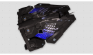
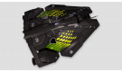
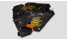
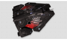
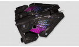
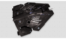
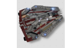
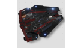
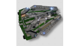

Viper Mk. IV производства компании Faulcon DeLacy является усовершенствованием Mk. III c уклоном в сторону мощи. Ей недостает скорости предшественницы, но броня и щиты — гораздо крепче. На модель Mk. IV можно установить более мощные силовую установку и РСД, поэтому она больше подходит для дальнего патрулирования и быстрой передислокации. Возможность размещения мощной силовой установки позволяет расширить выбор доступных модулей и вооружения и создать как можно более универсальный истребитель, который хорошо послужит как военным так и корпорациям.
Viper Mk. IV — это продолжение серии боевых истребителей Viper. Новая модель имеет больший трюм, больший топливный бак, большее кол-во внутренних слотов, силовая и РСД 4 класса, что делает его универсальным истребителем малого размера. При определенном снаряжении Viper Mk. IV может быть и торговцем, и боевым истребителем, и исследователем, и на нем очень приятно выполнять миссии. Управление комфортное, истребитель послушный, но сильно не хватает маневренности предыдущей модели.
|  |  |  |
|  |  |  |
|  |  |  |